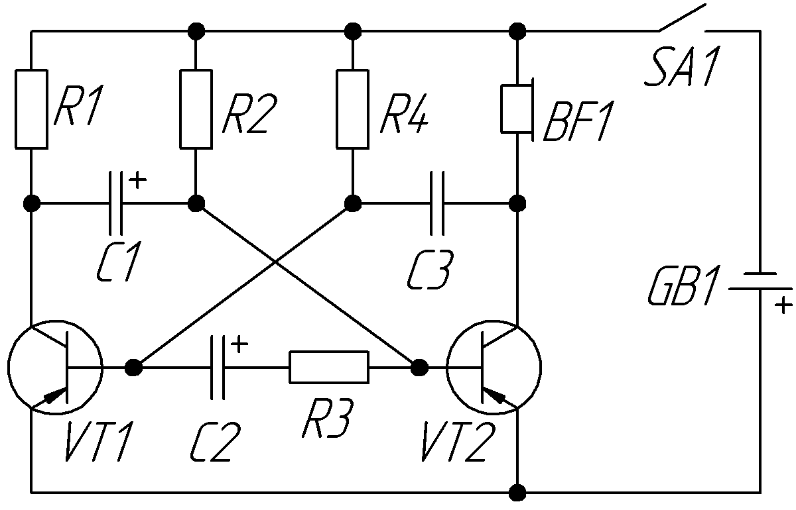
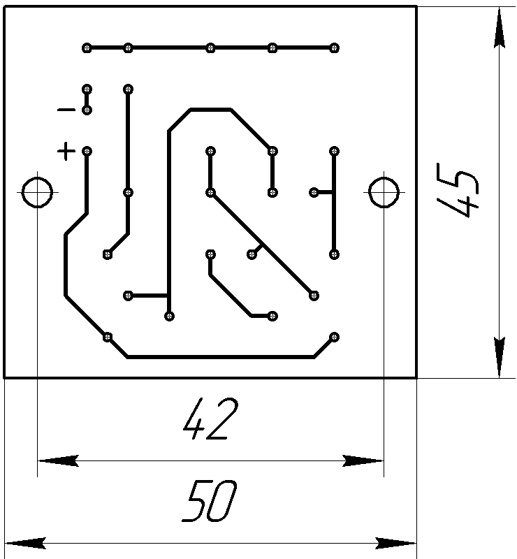
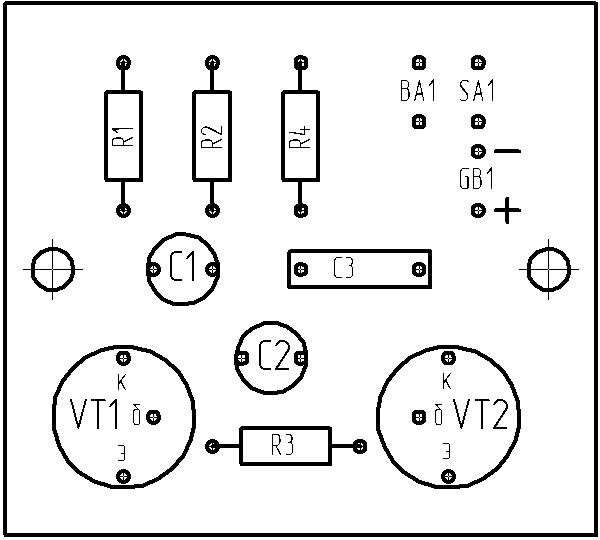
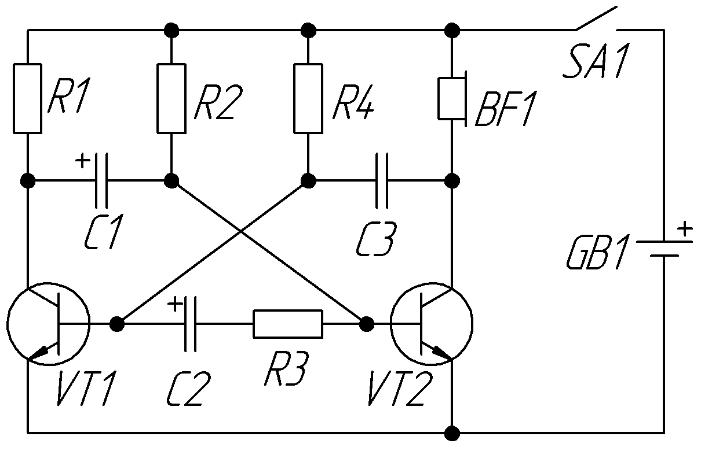

Электронная канарейка
В основе электронного имитатора пения канарейки лежит асимметричный мультивибратор (рис. 1). Асимметричным данный мультивибратор называется потому, что конденсаторы на коллекторах транзисторов имеют разные ёмкости.
{kind=link}

Таблица 1
| Обозначение | Наименование | Номинал | Кол-во | Примечание |
|---|---|---|---|---|
| BF1 | Динамическая головка |
50 Ом | 1 | более 50 Ом |
| С1 | Конденсатор электролитический | 47 мкФ-16 В |
1 | |
| С2 | Конденсатор электролитический | 22 мкФ-16 В |
1 | |
| С3 | Конденсатор | 5100 пФ | 1 | 4700...5600 пФ |
| GB1 | Батарейка | 9 В | 1 | Крона |
| R1 | Резистор постоянный | 39 кОм - 0,25 Вт | 1 | 0,25-0,5 Вт |
| R2, R4 | Резистор постоянный | 220 кОм - 0,25 Вт | 2 | 0,25-0,5 Вт |
| R3 | Резистор постоянный | 470 Ом - 0,25 Вт | 1 | 0,25-0,5 Вт |
| S1 | Выключатель | 1 | ||
| VT1 | Транзистор биполярный | МП41А | 2 | МП42Б, коэффициент передачи тока более 60 |


Тональность трели подбирается подбором ёмкости конденсатора С3. Если уменьшать ёмкость, то звук будет резким, а при увеличении ёмкости наоборот мягким. Частота трели регулируется ёмкостью конденсатора С2: чем меньше ёмкость, тем чаще трель. Резистор R3 так же влияет на частоту звука, его назначение – прекращать трель вовремя. Если сильно изменять сопротивление резистора R3, работа схемы может нарушиться.
Устройство можно изготовить на транзисторах структуры n-p-n, например, КТ315. В этом случае необходимо изменить полярность подключения источника питания и электролитических конденсаторов (рис. 4).
{kind=link}
